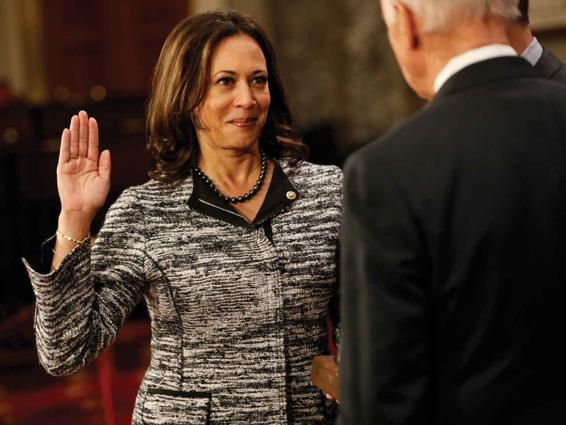

Women are playing an increasingly important role in U.S. politics, although they are still far from achieving full equality. Before 1993, there were only 2 women in the U.S. Senate (out of 100 Senate members), and 29 in the U.S. House of Representatives (out of 435). In 2020, there were 131 women in Congress—26 women in the Senate and 105 women in the House—representing just 26 percent of the 535 members. Forty-seven are women of color (Manning and Brudnick, 2020; Rutgers, 2020).
Women are continuing to make strides in other elected offices, although at a slow pace. In 2020, just 9 of the nation’s 50 governors were women. The U.S. Supreme Court had its first woman justice appointed in 1981 and its second 12 years later. Three women currently occupy seats on the Supreme Court—Ruth Bader Ginsburg, Elena Kagan, and Sonya Sotomayor—marking an all-time high. It was not until 1984 that a woman was nominated as the vice-presidential candidate of either major party. It would be more than another 30 years before Hillary Clinton would be named the 2016 Democratic nominee for president, becoming the first woman nominee for a major political party.
In January 2017, Kamala Harris was sworn in as senator of California, becoming the state’s first Black senator and only the second Black woman to ever serve in the Senate. The daughter of immigrants from India and Jamaica, Harris is also the first Indian American to serve in Congress and to be nominated as a vice presidential candidate for a major party.
Women politicians are overwhelmingly affiliated with the Democratic Party. In the U.S. Congress, over three-quarters of women are Democrats, and in state legislatures, over 60 percent are Democrats (Manning and Brudnick, 2020; Rutgers, 2020). However, over the past decade, the Republican Party—and especially the “Tea Party” movement—has prominently featured women leaders, including former Alaska governor Sarah Palin, Minnesota congresswoman Michele Bachmann, and South Carolina governor Nikki Haley; in 2017, Haley took on the position of United States Ambassador to the United Nations under President Donald Trump.
Typically, the more local the political office, the more likely it is to be occupied by a woman. One reason is that local politics is often part-time work, especially in smaller cities and towns. Local politics can thus be good “women’s work,” offering low pay, part-time employment, flexible hours, and the absence of a clear career path (Carr, 2008). The farther from home the political office, the more likely it is to be regarded as “men’s work,” providing a living wage, full-time employment, and a lifetime career.
American women are not alone in their recent strides in elected politics. Women are playing an increasingly major role in politics throughout the world. Yet, of the 193 countries that belong to the United Nations, only 19 are presently headed by women. More than 87 countries have chosen a female head of state or government at some point in their history; the United States is not among them (Women’s Power Index, 2020). As of 2019, women made up less than a quarter (24 percent) of the combined membership of the national legislatures throughout the world (Atske, Geiger, and Scheller, 2019). Regionally, Nordic countries had the highest percentage of women in national legislatures (42.5 percent), while Arab states and Pacific Island nations trailed with only 19 percent and 16.3 percent, respectively (UN Women, 2019). Despite very low ratings on the UN’s Human Development Index, Rwanda has the highest share of women in parliament in the world. The U.S. Congress ranks 78th out of 193 countries for which data exist (UN Women, 2019). Women are most likely to hold seats in national legislatures in countries in which women’s rights are a strong cultural value—where women have long had the right to vote and are well represented in the professions (Kenworthy and Malami, 1999).
CONCEPT CHECKS
Do you believe that girls or boys are more disadvantaged in the classroom? Why?
Describe at least three examples of how gender inequalities emerge in the workplace. How would a sociologist explain these inequities?
How do inequalities in the home, especially with regard to housework and child care, reflect larger gender inequities in society?
What are some important differences between men’s and women’s political participation?